AI
Claude Code 사용방법 — 터미널에 앉은 AI 개발 파트너, 이렇게 씁니다
챗봇에 묻고 복붙하던 시대는 끝. 내 프로젝트를 직접 읽고 고치는 AI 코딩 도구, 설치부터 첫 작업까지 비개발자 눈높이로.
ChatGPT·Claude·Copilot·Codex부터 AI 에이전트, 스킬·하네스·루프 엔지니어링까지. 어려운 말은 걷어내고, 비개발자 눈높이로 풀어냅니다.
36개의 글
챗봇에 묻고 복붙하던 시대는 끝. 내 프로젝트를 직접 읽고 고치는 AI 코딩 도구, 설치부터 첫 작업까지 비개발자 눈높이로.
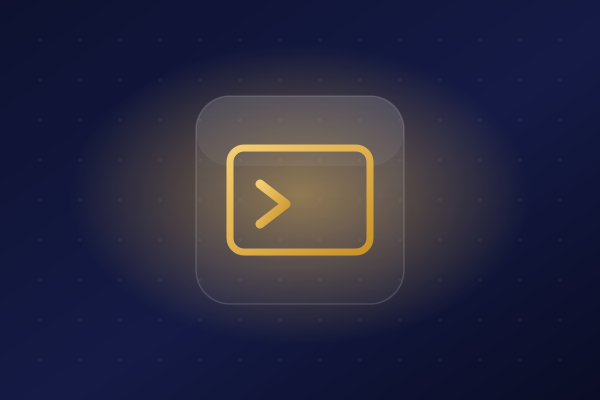
검은 화면이 무섭다면 이 글부터. claude 명령·주요 플래그·슬래시 커맨드·파이프 자동화까지 한 번에.
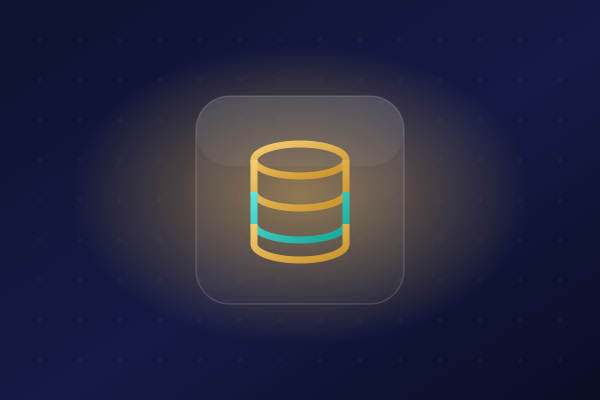
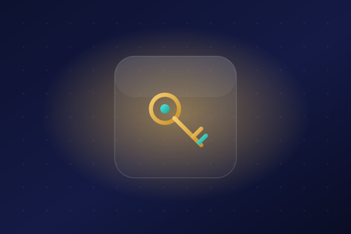
만드는 것과 잘 굴러가게 하는 것은 다른 일. CI/CD·깃허브·컨테이너·쿠버네티스로 이어지는 전체 지도를 한눈에.
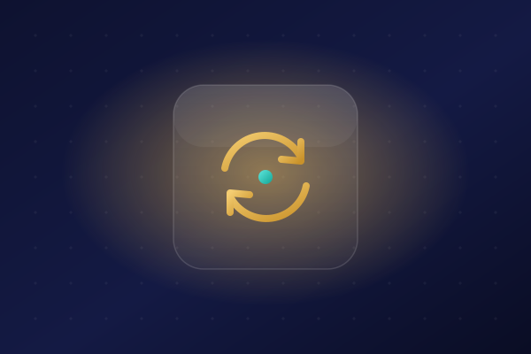
여러 명의 코드를 자주 합치고 자동으로 검사·배포하는 컨베이어. 손으로 하던 배포의 고통을 없애는 자동화.
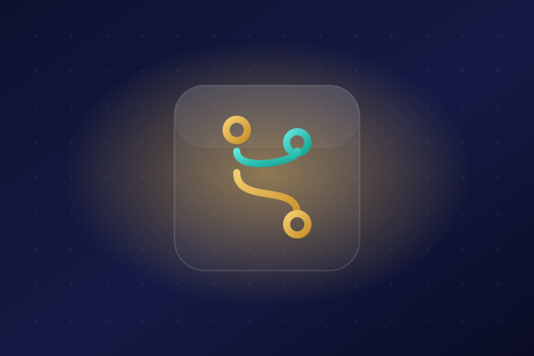
코드의 평행세계 '브랜치'. Git Flow·GitHub Flow·트렁크 기반까지, 상황에 맞는 전략을 쉽게 골라봅니다.
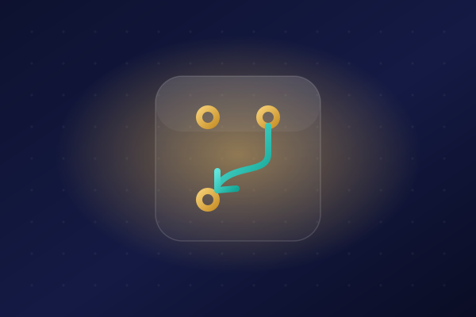
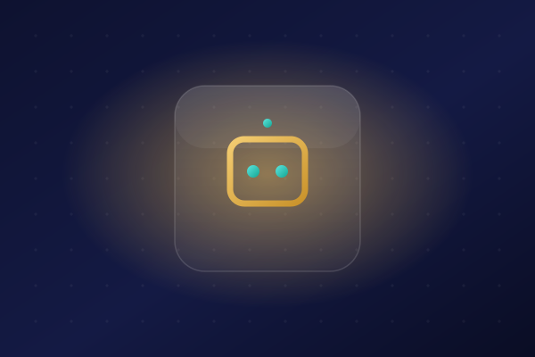
이슈를 할당하면 임시 환경에서 코드를 고치고 PR을 열어오는 자율 AI. 잘 맞는 일과 한계까지.
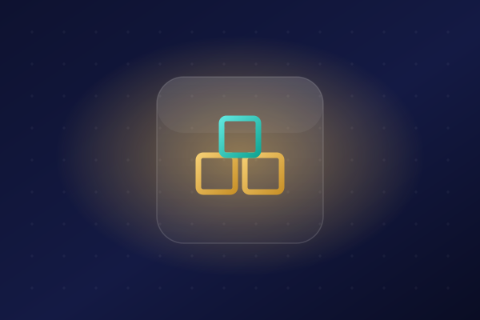
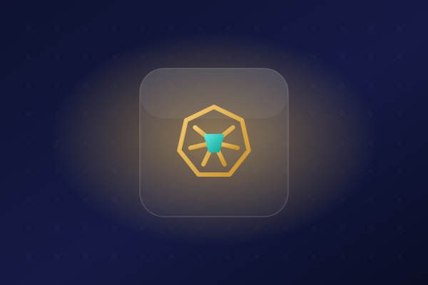

코딩 몰라도 만든 앱을 내 손으로 AWS에 올린 전체 여정. EC2부터 도메인까지 한눈에 보는 지도.


이름은 다 들어봤는데 뭐가 다를까? ChatGPT·Claude Code·GitHub Copilot·OpenAI Codex의 역할과 차이를 한 문장 요약과 함께 정리했습니다.

"그거 그냥 챗봇 아니야?" 아닙니다. 물으면 답하는 챗봇과, 목표를 주면 스스로 해내는 에이전트의 결정적 차이를 쉽게 풀었습니다.

Anthropic이 공개 표준으로 내놓은 에이전트 스킬. SKILL.md로 AI에게 '업무 매뉴얼'을 붙이는 방식과, 도구·MCP와의 차이를 정리했습니다.

에이전틱 루프, 루프 엔지니어링, 하네스. ReAct부터 차근차근, "AI에게 매번 시키지 말고 스스로 반복하게" 만드는 개념을 쉽게 풀었습니다.
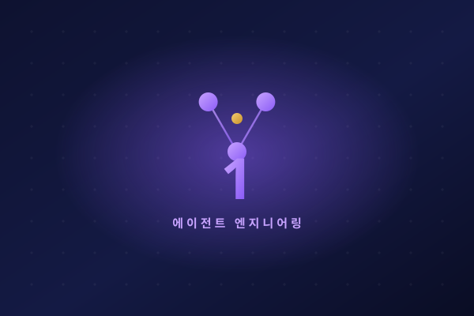
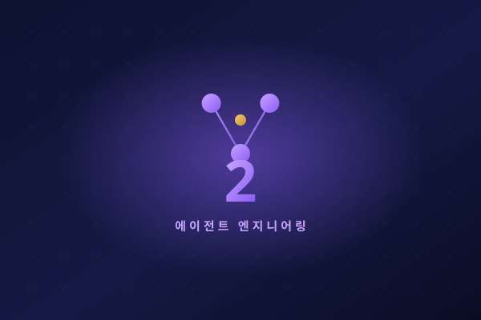
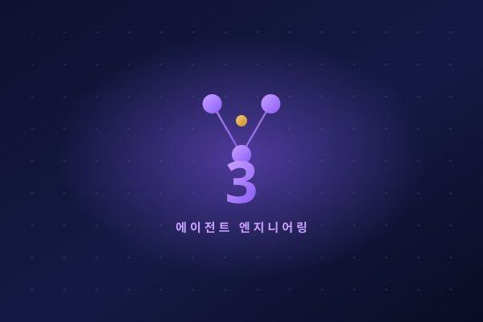
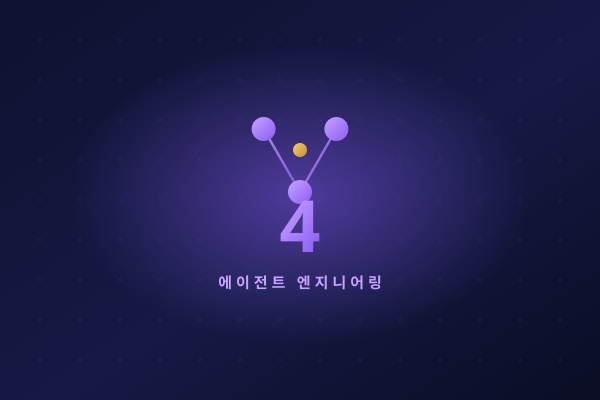
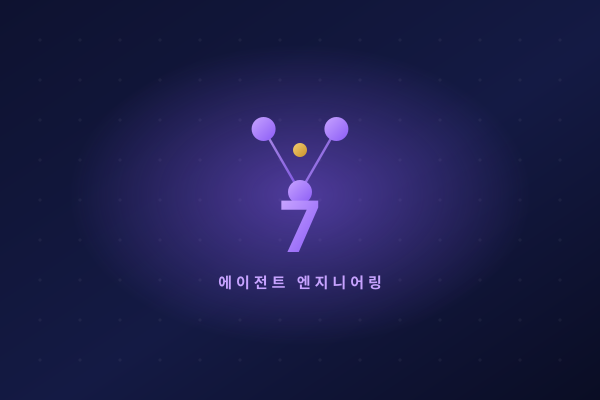
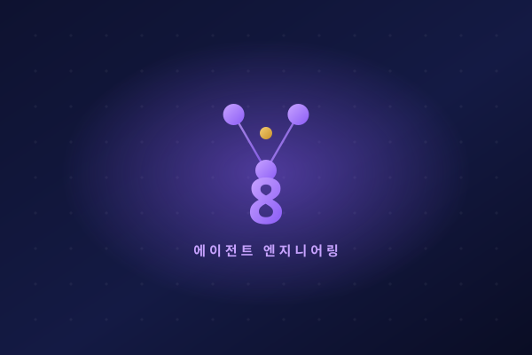

자연어로 말하면 AI가 코드를 만들어주는 '바이브 코딩'. 왜 지금 산업 전체가 이걸 이야기하는지, 비개발자에게 어떤 의미인지 쉽게 풀었습니다.

Claude Code·Cursor·Bolt·Lovable·Replit — 각 도구가 뭐가 다르고, 내 상황엔 무엇이 맞을까? 초보 눈높이로 비교했습니다.

검색 결과가 없습니다. 다른 키워드로 찾아보세요.